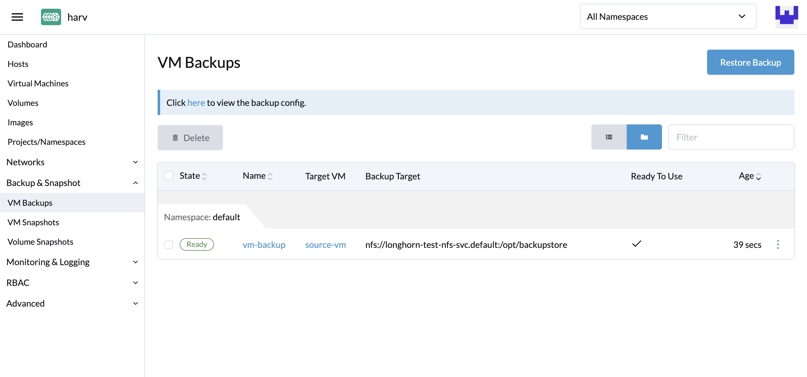
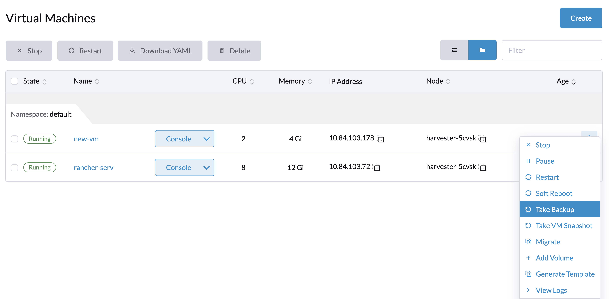
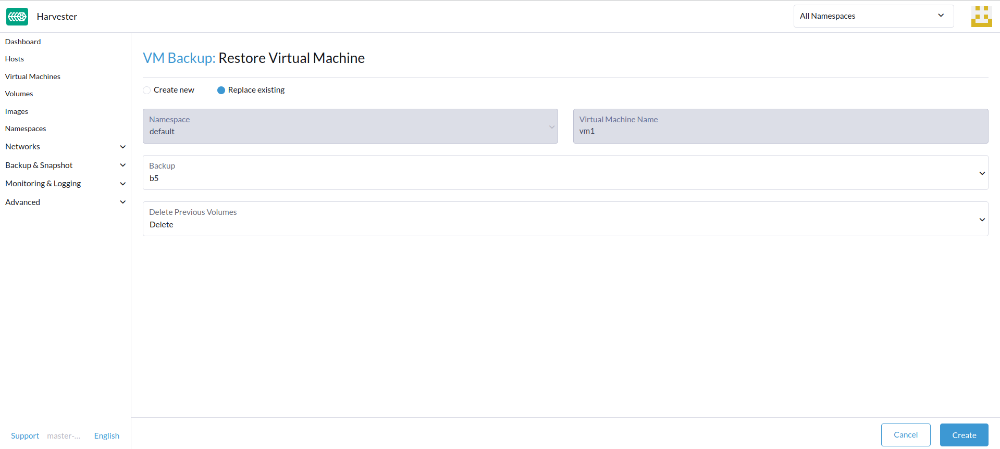
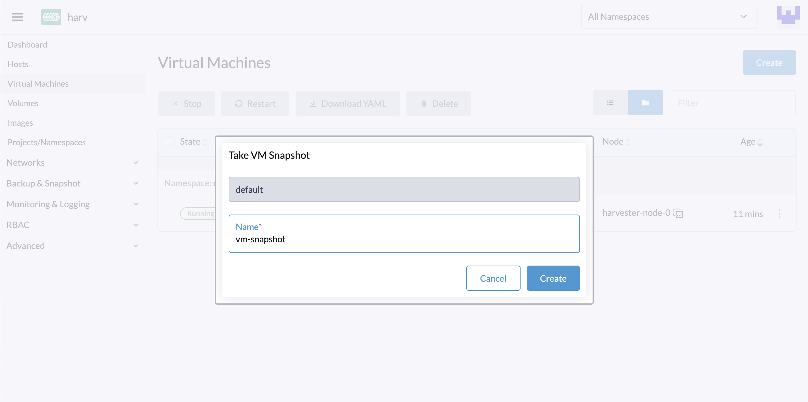
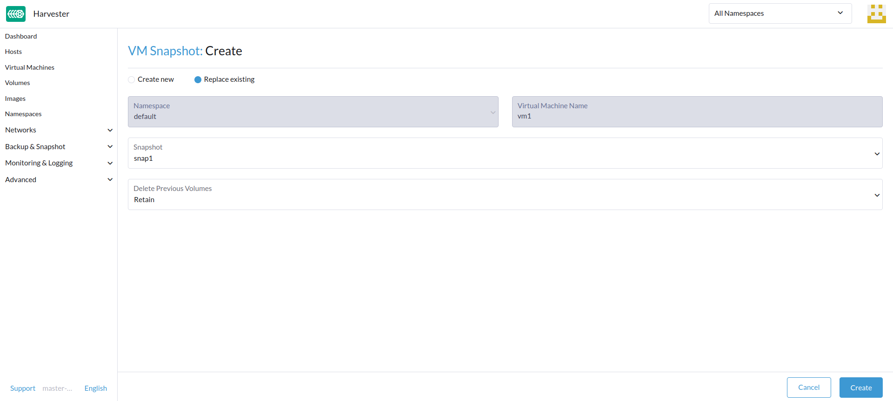

VM Backup, Snapshot & Restore
VM Backup & Restore
VM backups are created from the Virtual Machines page. The VM backup volumes will be stored in the Backup Target (an NFS or S3 server), and they can be used to either restore a new VM or replace an existing VM.

|
A backup target must be set up. For more information, see Configure Backup Target. If the backup target has not been set, you’ll be prompted with a message to do so. |
Configure Backup Target
A backup target is an endpoint used to access a backup store in Harvester. A backup store is an NFS server or S3 compatible server that stores the backups of VM volumes. The backup target can be set at Settings > backup-target.
| Parameter | Type | Description |
|---|---|---|
Type |
string |
Choose S3 or NFS |
Endpoint |
string |
A hostname or an IP address. It can be left empty for AWS S3. |
BucketName |
string |
Name of the bucket |
BucketRegion |
string |
Region of the bucket |
AccessKeyID |
string |
A user-id that uniquely identifies your account |
SecretAccessKey |
string |
The password to your account |
Certificate |
string |
Paste to use a self-signed SSL certificate of your S3 server |
VirtualHostedStyle |
bool |
Use |
Create a VM backup
-
Once the backup target is set, go to the
Virtual Machinespage. -
Click
Take Backupof the VM actions to create a new VM backup. -
Set a custom backup name and click
Createto create a new VM backup.
Result: The backup is created. You will receive a notification message, and you can also go to the Backup & Snapshot > VM Backups page to view all VM backups.
The State will be set to Ready once the backup is complete.

Users can either restore a new VM or replace an existing VM using this backup.
Restore a new VM using a backup
To restore a new VM from a backup, follow these steps:
-
Go to the
VM Backupspage. -
Click the
Restore Backupbutton at the top right. -
Specify the new VM name and click
Create. -
A new VM will be restored using the backup volumes and metadata, and you can access it from the
Virtual Machinespage.
Replace an existing VM using a backup
You can replace an existing VM using the backup with the same VM backup target.
You can choose to either delete or retain the previous volumes. By default, all previous volumes are deleted.
Requirements: The VM must exist and is required to be in the powered-off status.
-
Go to the
VM Backupspage. -
Click the
Restore Backupbutton at the top right. -
Click
Replace Existing. -
You can view the restore process from the
Virtual Machinespage.
Restore a new VM on another Harvester cluster
Users can now restore a new VM on another cluster by leveraging the VM metadata & content backup feature.
|
You must manually configure the virtual machine images with the same name on the new cluster first, otherwise the virtual machines will be failed to recover. |
Upload the same VM images to a new cluster
-
Check the existing image name (normally starts with
image-) and create the same one on the new cluster.$ kubectl get vmimages -A NAMESPACE NAME DISPLAY-NAME SIZE AGE default image-79hdq focal-server-cloudimg-amd64.img 566886400 5h36m default image-l7924 harvester-v1.0.0-rc2-amd64.iso 3964551168 137m default image-lvqxn opensuse-leap-15.3.x86_64-nocloud.qcow2 568524800 5h35m -
Apply a VM image YAML with the same name and content in the new cluster.
$ cat <<EOF | kubectl apply -f - apiVersion: harvesterhci.io/v1beta1 kind: VirtualMachineImage metadata: name: image-lvqxn namespace: default spec: displayName: opensuse-leap-15.3.x86_64-nocloud.qcow2 pvcName: "" pvcNamespace: "" sourceType: download url: http://download.opensuse.org/repositories/Cloud:/Images:/Leap_15.3/images/openSUSE-Leap-15.3.x86_64-NoCloud.qcow2 EOF
Restore a new VM in a new cluster
-
Setup the same backup target in a new cluster. And the backup controller will automatically sync the backup metadata to the new cluster.
-
Go to the
VM Backupspage. -
Select the synced VM backup metadata and choose to restore a new VM with a specified VM name.
-
A new VM will be restored using the backup volumes and metadata. You can access it from the
Virtual Machinespage.
VM Snapshot & Restore
Available as of v1.1.0
VM snapshots are created from the Virtual Machines page. The VM snapshot volumes will be stored in the cluster, and they can be used to either restore a new VM or replace an existing VM.
Create a VM snapshot
-
Go to the
Virtual Machinespage. -
Click
Take VM Snapshotof the VM actions to create a new VM snapshot. -
Set a custom snapshot name and click
Createto create a new VM snapshot.
Result: The snapshot is created. You can also go to the Backup & Snapshot > VM Snapshots page to view all VM snapshots.
The State will be set to Ready once the snapshot is complete.
Users can either restore a new VM or replace an existing VM using this snapshot.
Restore a new VM using a snapshot
To restore a new VM from a snapshot, follow these steps:
-
Go to the
VM Snapshotspage. -
Click the
Restore Snapshotbutton at the top right. -
Specify the new VM name and click
Create. -
A new VM will be restored using the snapshot volumes and metadata, and you can access it from the
Virtual Machinespage.
Replace an existing VM using a snapshot
You can replace an existing VM using the snapshot.
|
You can only choose to retain the previous volumes. |
-
Go to the
VM Snapshotspage. -
Click the
Restore Snapshotbutton at the top right. -
Click
Replace Existing. -
You can view the restore process from the
Virtual Machinespage.